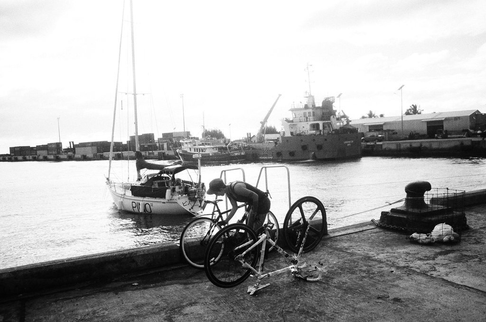
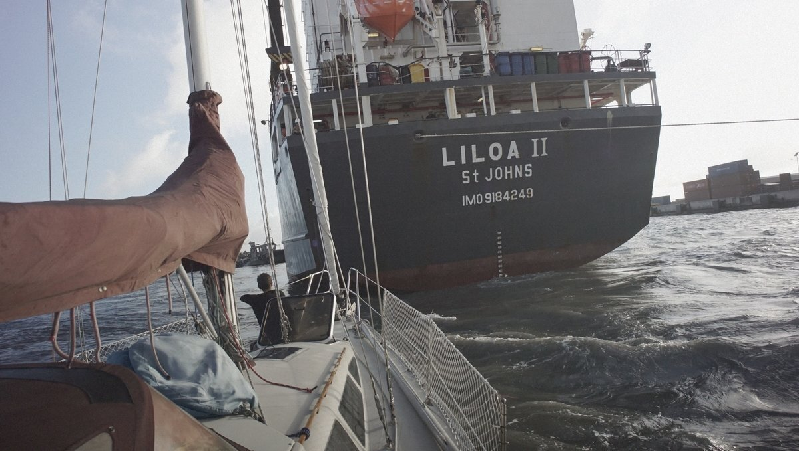

cook islands
In early July 2017, we sailed to Rarotonga in the Cook Islands. The island is only 32 km (20 mi) in circumference, and encircled by a reef. The only safe port is Avatiu, but it is open to the north.
There is no anchoring here, the only option is to med-moor to the harbor wall. There are washrooms, showers, a propane refill station close to the main harbor, and it's possible to get a SIM card from Bluesky for internet (2017).
Avatiu port is small, occupied by cargo and fishing ships. One day, a cargo ship came in, its stern close to our bow. Sometimes the harbor master ask sailboats to move to allow the ships to dock, but he did not ask. We wish he had. By the time the ship was here, we had our stern right near the pier and could not back any further. Rek sat at the bow, waving to the people aboard the ship. All was fine in the end, but it was stressful to have something that big just a few short arm lengths away.
Everyday kids would come and dive at the pier, they liked to hang and sit on our stern lines. One time, a kid accidentally undid one of our ropes—oops, glad we were onboard to see it happen.
We cycled around Rarotonga, the south side of the island has nice roads, but the east side isn't as nice, and most of the north part of the island is dotted with resorts. We enjoyed the ride anyway, stopping at a beach to enjoy the salt air and sun.
While moored in Avatiu we met most of the other sailors occupying the harbor, the sailing vessels Sula (NZ), Bob (US) and a French-flagged vessel whose name has escaped our minds. We met Sula and Bob again in Niue, Tonga and New Zealand. The French boat had two teenagers aboard and was heading to New Caledonia, with plans to live there.
We left Rarotonga in mid July to sail to Niue.